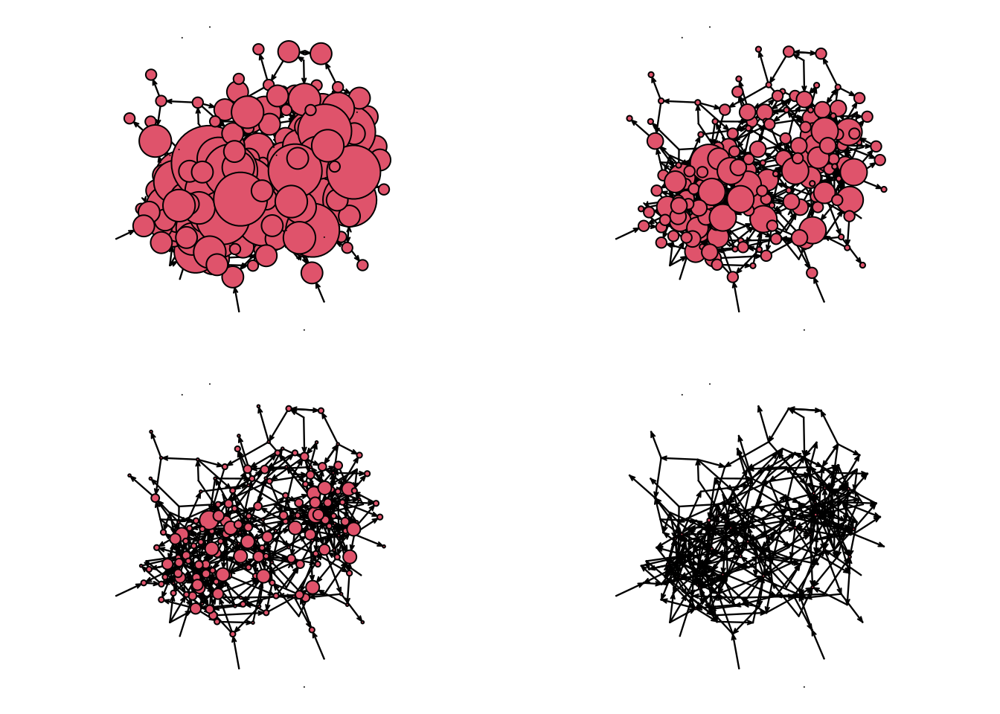
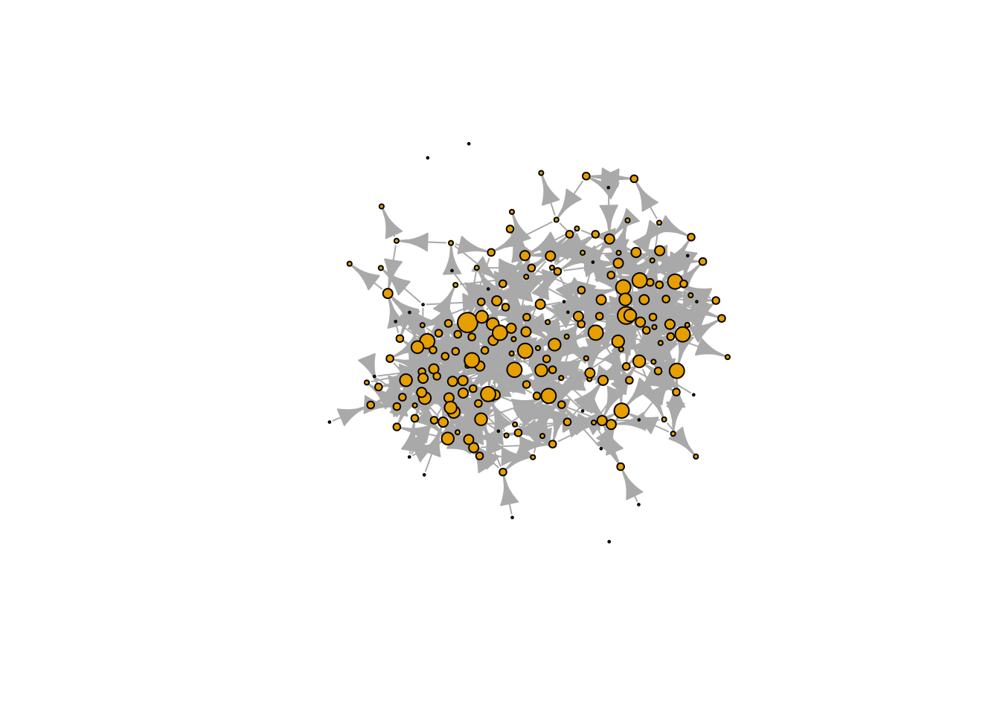
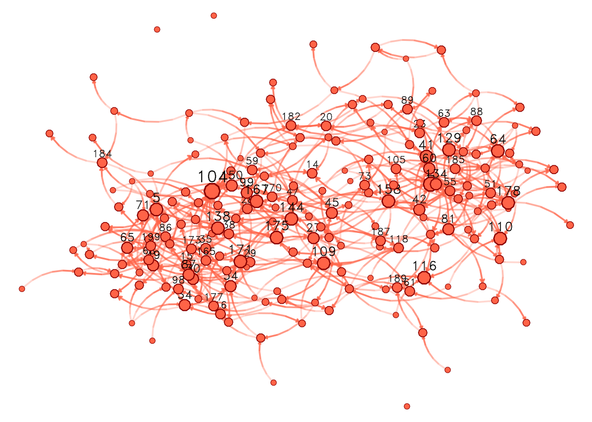
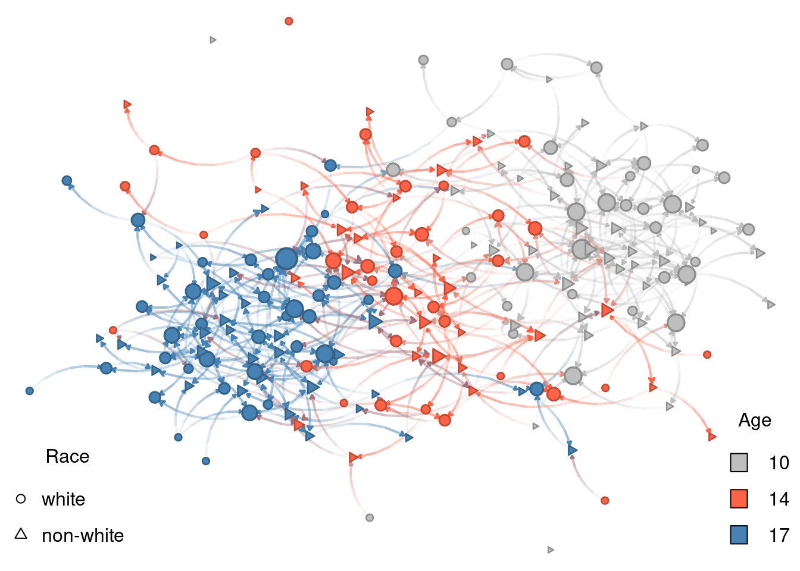
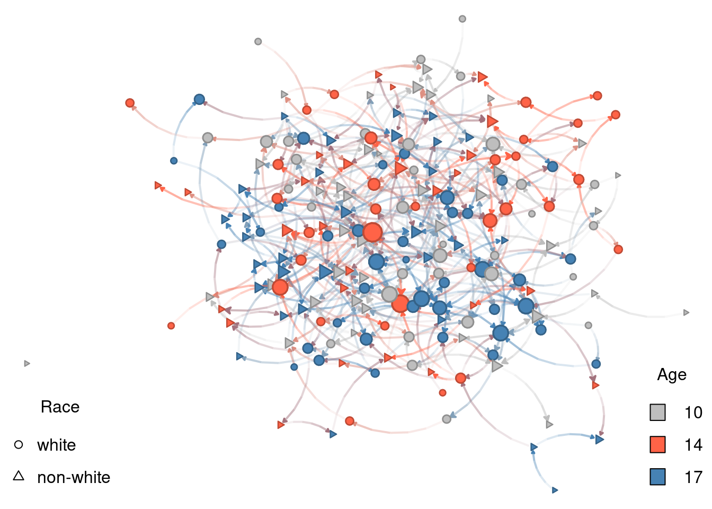

9.4 Visualizing the network
We will focus on three different attributes that we can use for this visualization: Node size, node shape, and node color. While there are no particular rules, some ideas you can follow are:
Node size Use it to describe a continuous measurement. This feature is often used to highlight important nodes, e.g., using one of the many available degree measurements.
Node shape Shapes can be used to represent categorical values. A good figure will not feature too many of them; less than four would make sense.
Node color Like shapes, colors can be used to represent categorical values, so the same idea applies. Furthermore, it is not crazy to use both shape and color to represent the same feature.
Notice that we have not talked about layout algorithms. The R packages to build graphs usually have internal rules to decide what algorithm to use. We will discuss that later on. Let’s start by size.
9.4.1 Vertex size
Finding the right scale can be somewhat difficult. We will draw the graph four times to see what size would be the best:
# Sized by indegree
net_sim %v% "indeg" <- sna::degree(net_sim, cmode = "indegree")
# Changing device config
op <- par(mfrow = c(2, 2), mai = c(.1, .1, .1, .1))
# Plotting
glayout <- gplot(net_sim, vertex.cex = (net_sim %v% "indeg") * 2)
gplot(net_sim, vertex.cex = net_sim %v% "indeg", coord = glayout)
gplot(net_sim, vertex.cex = (net_sim %v% "indeg")/2, coord = glayout)
gplot(net_sim, vertex.cex = (net_sim %v% "indeg")/10, coord = glayout)
Line-by-line we did the following:
net_sim %v% "indeg" <- degree(net_sim, cmode = "indegree")Created a new vertex attribute called indegree and assigned it to the network object. The indegree is calculated using thedegreefunction from thesnapackage. Sinceigraphalso has adegreefunction, we are making sure that R usessna’s and notigraph’s. Thepackage::functionnotation is useful for these cases.op <- par(mfrow = c(2, 2), mai = c(.1, .1, .1, .1))This changes the graphical device information to (a)mfrow = c(2,2)have a 2x2 grid by row, meaning that new figures will be added left to right and then top to bottom, and (b) set the margins in the figure to be 0.1 inches in all four sizes.glayout <- gplot(net_sim, vertex.cex = (net_sim %v% "indeg") * 2)generating the plot and recording the layout. Thegplotfunction returns a matrix of size# verticesby 2 with the positions of the vertices. We are also passing thevertex.cexargument, which we use to specify the size of each vertex. In our case, we decided to size the vertices proportional to their indegree times two.gplot(net_sim, vertex.cex = net_sim %v% "indeg", coord = glayout), again, we are drawing the graph using the coordinates of the previous draw, but now the vertices are half the size of the original figure.
The other two calls are similar to four. If we used igraph, setting the
size can be more accessible thanks to the netdiffuseR R package. Let’s start by converting
our network to an igraph object with the R package intergraph.
library(intergraph)
library(igraph)
# Converting the network object to an igraph object
net_sim_i <- asIgraph(net_sim)
# Plotting with igraph
plot(
net_sim_i,
vertex.size = netdiffuseR::rescale_vertex_igraph(
vertex.size = V(net_sim_i)$indeg,
minmax.relative.size = c(.01, .1)
),
layout = glayout,
vertex.label = NA
)
We could also have tried netplot, which should make things easier and make a better use of the space:
library(netplot)
nplot(
net_sim, layout = glayout,
vertex.color = "tomato",
vertex.frame.color = "darkred"
)
With a good idea for size, we can now start looking into vertex color.
9.4.2 Vertex color
For the color, we will use vertex age. Although age is, by definition, continuous,
we only have three values for age. Because of this, we can treat age as categorical.
Instead of using nplot we will go ahead with nplot_base. As of this version of
the book, the netplot package does not have an easy way to add legends with the
core function, nplot; therefore, we use nplot_base which is compatible with
the R function legend, as we will now see:
# Specifying colors for each vertex
vcolors_palette <- c("10" = "gray", "14" = "tomato", "17" = "steelblue")
vcolors <- vcolors_palette[as.character(net_sim %v% "age")]
net_sim %v% "color" <- vcolors
# Plotting
nplot_base(
net_ig,
layout = glayout,
vertex.color = net_sim %v% "color",
)
# Color legend
legend(
"bottomright",
legend = names(vcolors_palette),
fill = vcolors_palette,
bty = "n",
title = "Age"
)Line by line, this is what we just did:
vcolors <- c("10" = "gray", "14" = "tomato", "17" = "steelblue")we created a character vector with three elements,"gray","tomato", and"blue". Furthermore, the vector has names assigned to it,"10","14", and"17"– the ages we have in the network–so that we can access its elements by indexing by name, e.g., if we typevcolors["10"]R returns the value"gray".vcolors <- vcolors[as.character(net_sim %v% "age")]there are several things going on in this line. First, we extract the attribute “age” from the network using the%v%operator. We then transform the resulting vector from integer type to a character type with the functionas.character. Finally, using the resulting character vector with values"10", "14", "17", ..., we retrieve values fromvcolorsname-indexing. The resulting vector is of length equal to the vertex count in the network.net_sim %v% "color" <- vcolorscreates a new vertex attribute,color. The assigned value is the result from subsettingvcolorsby the ages of each vertex.nplot_base(...finally draws the network. We pass the previously computed vertex coordinates and vertex colors with the new attributecolor.legend(...)Let’s see one parameter at a time:"bottomright"tells the overall position of the legendlegend = names(vcolors)passes the actual legend (text); in our case the ages of individuals.fill = vcolorspasses the colors associated with the text.bty = "n"suppresses wrapping the legend within a box.title = "Age"sets the title to be “Age”.
9.4.3 Vertex shape
For the color, we will use vertex age. Although age is, by definition, continuous, we only have three values for age. Because of this, we can treat age as categorical.
# Specifying the shapes for each vertex
vshape_list <- c("white" = 15, "non-white" = 3)
vshape <- vshape_list[as.character(net_sim %v% "race")]
net_sim %v% "shape" <- vshape
# Plotting
nplot_base(
net_ig,
layout = glayout,
vertex.color = net_sim %v% "color",
vertex.nsides = net_sim %v% "shape"
)
# Color legend
legend(
"bottomright",
legend = names(vcolors_palette),
fill = vcolors_palette,
bty = "n",
title = "Age"
)
# Shape legend
legend(
"bottomleft",
legend = names(vshape_list),
pch = c(1, 2),
bty = "n",
title = "Race"
)
Let’s now compare the figure to our original ERGM:
Low density (
edges) Without low density, the figure would be a hairball.Race homophily (
nodematch("race")) Although not surprisingly evident, nodes tend to form small clusters by shape, which, in our model, represents race.Structural balance (
ttriad) A force, in this case, opposite to low density, higher prevalence of transitive triads makes individuals cluster.Age homophily (
absdiff("age")) This is the most prominent feature of the graph. In it, nodes are clustered by age.
Of the four features, age homophily is the one that stands out. Why is this tha case? If we look again at the parameters used in the ERGM and how these interact with vertices’ attributes, we will find the answer:
The log-odds of a new race-homophilic tie are \(1\times\theta_{\mbox{race-homophily}} = 0.5\).
But, the log-odd of an age heterophilic tie between, say, 14 and 17 year olds is \(|17-14|\theta_{\mbox{age-homophily}} = 3\times -0.5 = -1.5\).
Therefore, the effect of heterophily (which is just the opposite of homophily) is significantly larger, actually three times in this case, than the race-homophily effect.
This observation becomes clear if we run another simulation with the same seed, but
adjusting for the maximum size the effect of age-homophily can take. A
quick-n-dirty way to achieve this is to re-run the simulation with the nodematch
term instead of the absdiff term. This way, we (a) explicitly operationalize
the term as homophily (before it was heterophily,) and (b) have both homophily
effects have the same influence in the model:
net_sim2 <- simulate(
net ~ edges +
nodematch("race") +
ttriad +
nodematch("age"),
coef = c(-5, .5, .25, .5) # This line changed
)Re-doing the plot. From the previous graph-drawing, only the graph structure
changed. The vertex attributes are the same so we can go ahead and re-use them.
Like I mentioned earlier, the nplot_base function currently supports igraph
objects, so we will use intergraph::asIgraph to make it work:
# Plotting
nplot_base(
asIgraph(net_sim2),
# We comment this out to allow for a new layout
# layout = glayout,
vertex.color = net_sim %v% "color",
vertex.nsides = net_sim %v% "shape"
)
# Color legend
legend(
"bottomright",
legend = names(vcolors_palette),
fill = vcolors_palette,
bty = "n",
title = "Age"
)
# Shape legend
legend(
"bottomleft",
legend = names(vshape_list),
pch = c(1, 2),
bty = "n",
title = "Race"
)
As expected, there is no longer a dominant effect in homophily. One important thing we can learn from this final example is that phenomena will not always show themselves in graph visualization. Careful analysis in complex networks is a must.